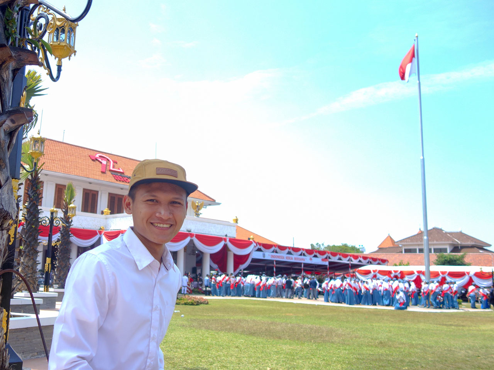

<!DOCTYPE html>
<html lang="id">
<head>
	<title>Misi Merah Putih - Misi Mengikuti Upacara 17 Agustus di 34 Ibukota Provinsi se-Indonesia</title>
	<meta charset="utf-8" />
	<meta name="viewport" content="width=device-width, initial-scale=1, shrink-to-fit=no">
	<meta name="description" content="Misi Mengikuti Upacara 17 Agustus di 34 Ibukota Provinsi se-Indonesia">
    <meta name="author" content="Misi Merah Putih">
	
	<link rel="shortcut icon" href="favicon.ico" type="image/x-icon">
	<link rel="icon" href="favicon.ico" type="image/x-icon">

    <link rel="stylesheet" href="https://unpkg.com/leaflet@1.3.3/dist/leaflet.css" integrity="sha512-Rksm5RenBEKSKFjgI3a41vrjkw4EVPlJ3+OiI65vTjIdo9brlAacEuKOiQ5OFh7cOI1bkDwLqdLw3Zg0cRJAAQ==" crossorigin=""/>
    <script src="https://unpkg.com/leaflet@1.3.3/dist/leaflet.js" integrity="sha512-tAGcCfR4Sc5ZP5ZoVz0quoZDYX5aCtEm/eu1KhSLj2c9eFrylXZknQYmxUssFaVJKvvc0dJQixhGjG2yXWiV9Q==" crossorigin=""></script>

    <style type="text/css">
    	body {
			position: fixed;
			top:0 ;
			left: 0;
			height: 100%;
			width: 100%;
			margin: 0;
		}
		.myMap {
			position: relative;
			height: 100%;
			width: 100%;
			outline: none;
			touch-action: none;
			background-color: #445a71;position: relative;
		}
		.info { 
			padding: 6px 8px; font: 14px/16px Arial, Helvetica, sans-serif; background: white; background: rgba(255,255,255,0.8); box-shadow: 0 0 15px rgba(0,0,0,0.2); border-radius: 5px; 
		} 
		.info h4 { 
			margin: 0 0 5px; color: #777;
		}
    </style>
</head>
<body>
	<!-- <center><h3>Misi Merah Putih</h3><p>Misi Mengikuti Upacara 17 Agustus di 34 Ibukota Provinsi se-Indonesia</p></center> -->
	<div id="myMap" class="myMap"></div>

	<script>
		var mymap = L.map('myMap').setView([-2.600029, 118.015776], 5);

		var myIcon = L.icon({
		    iconUrl: 'marker.png',
		    iconSize: [40, 44],
		    popupAnchor: [0, -15],	
		});

		L.tileLayer('https://api.tiles.mapbox.com/v4/{id}/{z}/{x}/{y}.png?access_token=pk.eyJ1IjoibWFwYm94IiwiYSI6ImNpejY4NXVycTA2emYycXBndHRqcmZ3N3gifQ.rJcFIG214AriISLbB6B5aw', {
			maxZoom: 18,
			attribution: 'Map data &copy; <a href="https://www.openstreetmap.org/">OpenStreetMap</a> contributors, ' +
				'<a href="https://creativecommons.org/licenses/by-sa/2.0/">CC-BY-SA</a>, ' +
				'Imagery © <a href="https://www.mapbox.com/">Mapbox</a>',
			id: 'mapbox.streets'
		}).addTo(mymap);

		var info = L.control();
		info.onAdd = function (mymap) {
			this._div = L.DomUtil.create('div', 'info');
			this._div.innerHTML = '<a href="http://misimerahputih.id/cerita/index.html" style="text-decoration:none;"><h4>Baca Cerita</h4></a>' ;
			return this._div;
		};
		info.addTo(mymap);


		L.marker([-7.262539, 112.743403], {icon: myIcon}).addTo(mymap)
			.bindPopup("<center><br /><b>Surabaya, Jawa Timur</b><br />2017</center>");
	</script>
</body>
</html>
